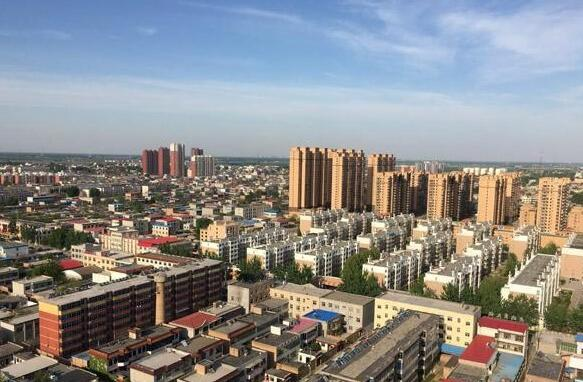

雄安雄区起步区包含60村：彻底管死 不增一砖一瓦
原标题：雄安新区起步区为容城安新两县60村，彻底管死不增一砖一瓦
4月13日，澎湃新闻（www.thepaper.cn）从权威渠道获得的一份“雄安新区驻村工作组管控政策解读明白纸”显示， 雄安新区起步区为河北容城、安新两县的60个村，这一区域也是管控举措的第一层级，实施最严管控，彻底“管死”，不能 增加一砖一瓦，一草一木。

河北容城县县城。所谓“明白纸”，是指基层政府以通俗语言向民众解释政策或下发通知的官方格式文件。在这份题为“做好全面管控，切实为新区 建设打好基础”的雄安新区驻村工作组管控政策解读明白纸中，管控的内涵是指 ：“政府通过一系列的法律、行政、经济等手段 ，依法对区域内政治、经济和社会公共事务等进行管理和控制，确保雄安新区建设预期目标成功实现的过程。”
管控时限为自2017年4月1日起，正式开始全面公开管控，并根据新区规划建设和白洋淀生态环境治理和保护进展情况适时调整或解除。
4月1日，新华社对外发布消息称，中共中央、国务院印发通知，决定设立河北雄安新区；新区规划范围涉及河北省雄县、容城、安新3县及周 边部分区域。雄安新区规划建设以特定区域为起步区先行开发，起步区面积约100平方公里，中期发展区面积约200平方公里，远期控制区面积 约2000平方公里。
根据雄安新区驻村工作组管控政策解读明白纸，对新区管控内容包括六类：
一是各类规划。包括土地利用、城乡建设、产业发展及交通、生态、农林水等；
二是土地管理。包括调规、变性、征用、转包、项目供地、土地流转等；
三是项目建设、包括工农业、基础设施、公共服务、城乡住房、商贸物流等；
四是户籍人口。包括区域外一切人口的迁居调入和户籍迁入手续办理等；
五是不动产交易。包括所有期房、现房和小产权房等；
六是其他需管控内容。
管控层级和范围方面，第一层级的管控区域是指新区起步区，涉及容城、安新两县的60个村，实施最严管控，彻底“管死”，不能增加一砖一瓦， 一草一木；第二层级是今后根据规划建设需要进行有序疏解的村庄，涉及到三县大约164个村，实施严格管控、全面“控死”，维持现有空间形态 ；第三层级是指新区全域，实施全面管控，严管严控。
公开资料显示，雄安新区规划范围的雄县、容城、安新3县中，雄县目前下辖6镇3乡223村；容城县目前下辖5镇3乡127村；安新县目前下辖9镇3乡207村。
管控的方式有三种：一是冻结，主要是针对准备和正在进行的规划批复、土地征用等程序性行为和手续，实行全部冻结或封存；二是暂停，主要是针对准备和正 在进行的各类项目建设等实体性开发建设、生产经营和买卖交易等活动，实行阶段性停止；三是严禁，主要是指严禁对功能定位严重不符、影响规划实施和生态 修复的各类行为。
文件称，对雄安新区实施全面管控是新区规划建设好开局、起好步的关键和基础。实施管控的重要性和必要性，一是有利于顺利摸清新区真实家底；二是有 利于防止盲目改造、建设投资；三是节省国家建设成本；四是有利于维护社会稳定、公平正义。
4月4日，国家发展改革委主任何立峰在接受新华社专访时表示，规划建设河北雄安新区，下一步将指导河北省和有关方面高标准高质量组织编制雄安新区总 体规划、起步区控制性规划、启动区控制性详细规划及白洋淀生态环境治理和保护规划，确保一张蓝图干到底。
[责任编辑：王家乐 PX043]